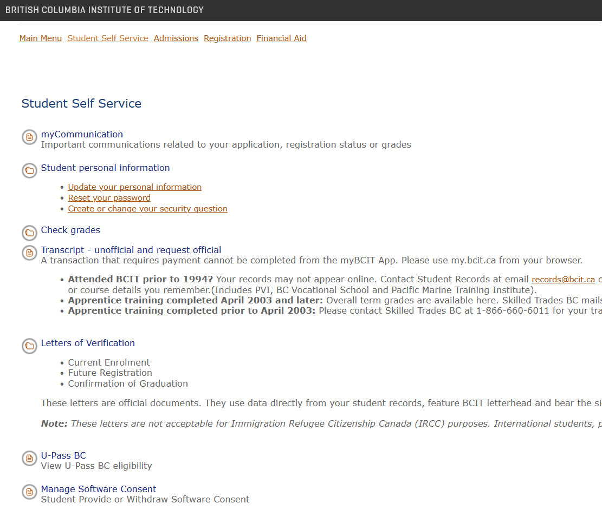
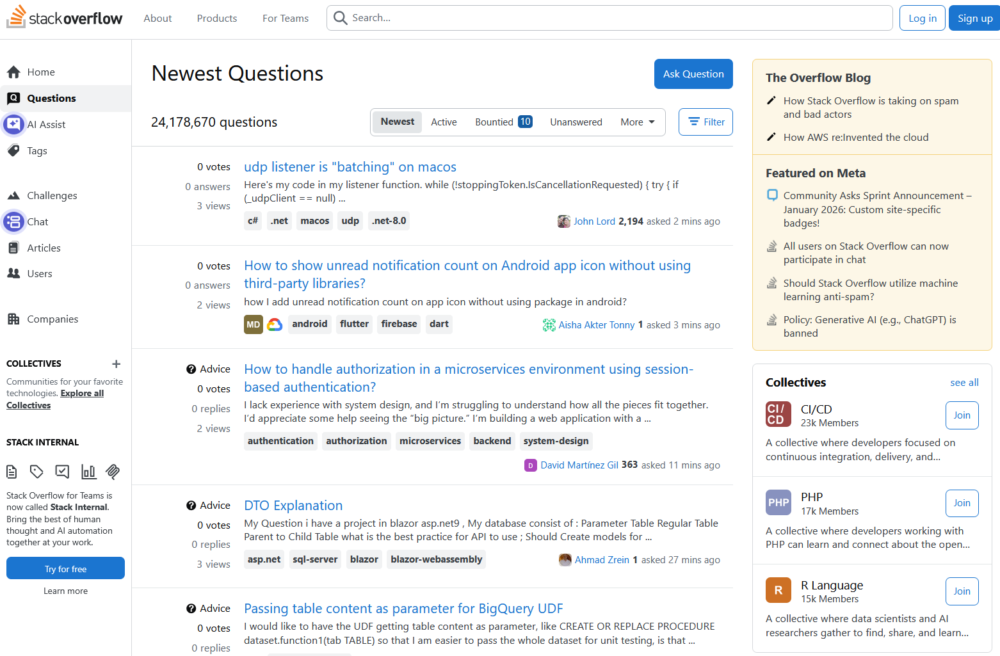
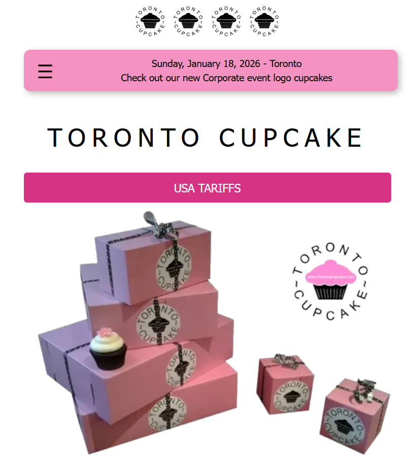
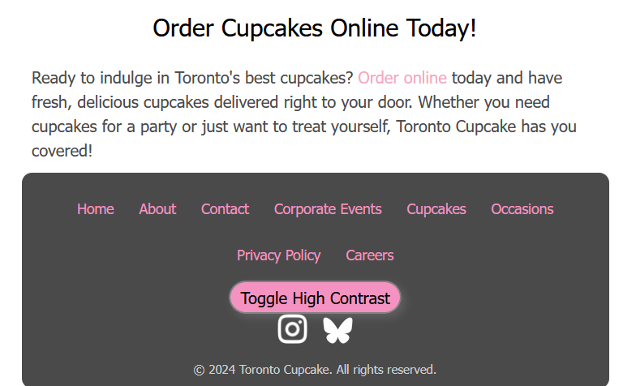
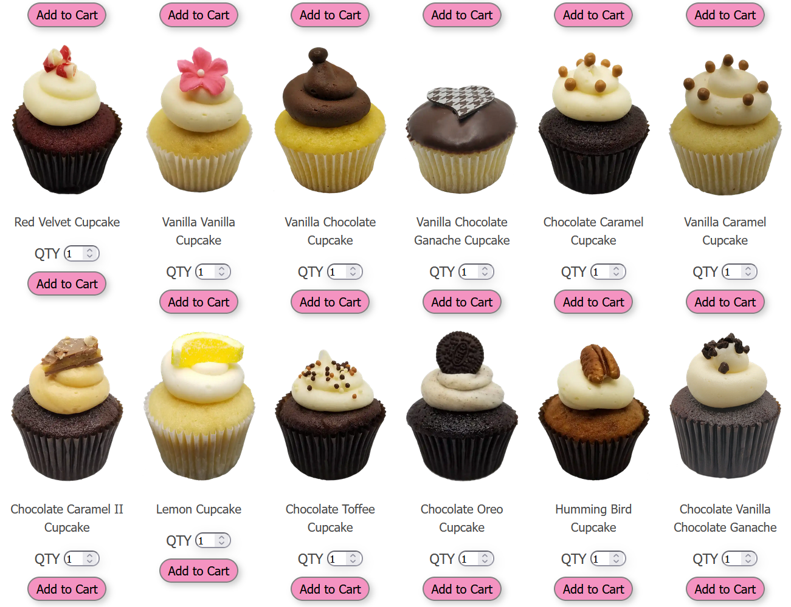

Week 1
Task
Choose a website with poorly designed user interfaces to redesign.
How I Did it
My colleague and I looked through websites that we recently used and analyzed their user experience and the design of their user interfaces. I tried to find websites with established design themes and enough content to work with over a 13-week period. We chose 3 websites to potentially redesign to narrow it down to one choice.
The two other sites we considered were
The BCIT Program Application Page

We considered this site for:
- lack of effort put into styling
- difficult to read text
Stack Overflow

We considered this site for:
- overwhelming amount of information
- difficult to read text
Website For Redesign
The website that my partner and I decided on for the project is the Toronto Cupcake Website.
Screenshots



Why I Chose It
We chose this website for 3 main reasons.
- The business has 2 distinct audiences.
-
Corporations
-
People who enjoy cute desserts
Toronto Cupcake provides custom branded cupcakes for corporate events. The business should have a design that appeals to this demographic as well as the general public. This intersection of demographics will make the design process more streamlined, as we will have a more specific goal in mind for a new design theme.
-
The website has enough content to redesign within 13 weeks.
It contains 11 static pages with straightforward content such as text, images, or item listings.
-
The website has many aspects that need redesigning.
-
Dead space
- Large strings of small text
- Unexpected hover state functionality
- Poor spacing between items in footer
These issues provides ample opportunities to analyze the site's UI as it relates to the principles of UX/UI design.
Why I'm Working in a Team
I chose to work with a team because I tend to work faster when I work with others. This is because I tend to complete my contributions earlier, as to be considerate of my teammates' time. Brainstorming phases are also much faster in groups as more ideas are contributed and also verbalized, better establishing them and making them easier to analyze.
What I Hope to Get From These Classes
UX/UI Design
I hope to become familiar enough with the processes of designing UI to comfortably apply them to my future projects. I would like to learn how to minimize and better spot mistakes in my web projects.
Business Communications
I aim to develop more effective communication skills by regularly practicing the 7 C's of communication.
For both classes, I hope to improve my ability to work in a team.